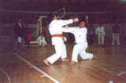
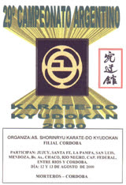
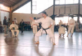

Falta en el archivoEsta fotografía no está en la copia local del sitio 2001; es recuperable del servidor original. a_karate___kobudo_1997_world_tournament_1.jpg
Falta en el archivoEsta fotografía no está en la copia local del sitio 2001; es recuperable del servidor original. a_imagen_de_un_libro_folleto_en_japones_1.jpg

Campeonato Interestilos. III Copa Cuidad de Campana. Bs. As. Argentina. Año: 2000.
Falta en el archivoEsta fotografía no está en la copia local del sitio 2001; es recuperable del servidor original. a_karate_trad_oct_96_campana_1.jpg
Falta en el archivoEsta fotografía no está en la copia local del sitio 2001; es recuperable del servidor original. a_karate___kobudo_1997_world_tournament3_1.jpg
Falta en el archivoEsta fotografía no está en la copia local del sitio 2001; es recuperable del servidor original. a_16_camp_ar_torneo_jintatsu_higa_1987_1.jpg
Falta en el archivoEsta fotografía no está en la copia local del sitio 2001; es recuperable del servidor original. a_karate___kobudo_1997_world_tournament2_1.jpg

29 Campeonato Argentino de Karate-Do. Cordoba. Argentina. Año: 2000

Campionati del Mondo Di Point Karate
Falta en el archivoEsta fotografía no está en la copia local del sitio 2001; es recuperable del servidor original. a_the_first_okinawa_tradicional_1.jpg
Falta en el archivoEsta fotografía no está en la copia local del sitio 2001; es recuperable del servidor original. a_okinawa_kar___kobudo_pre-tournament_1995_1.jpg